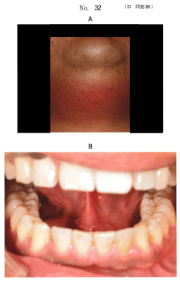
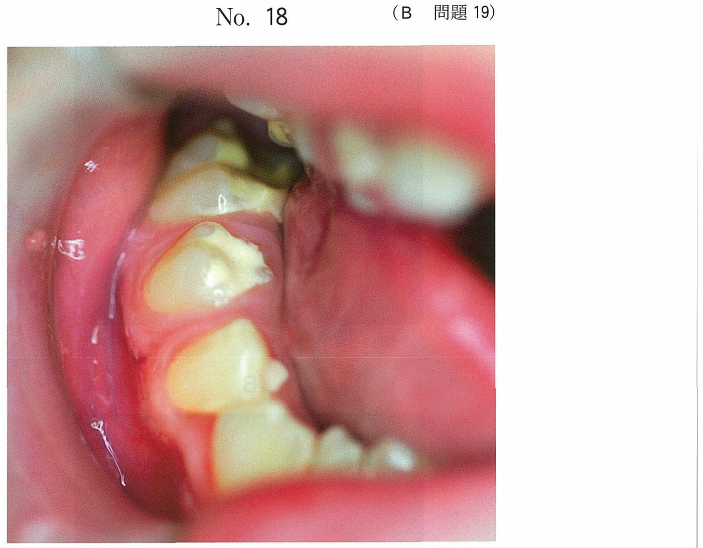
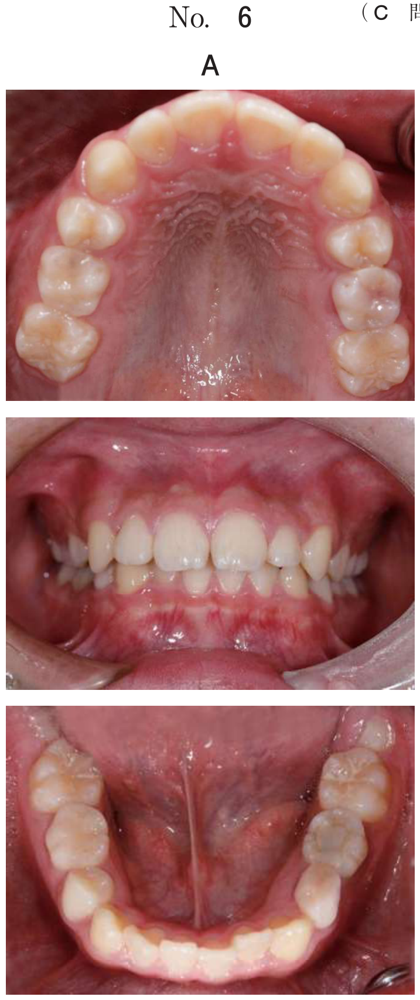

膿瘍の処置
膿瘍の分類と切開時期
歯性感染症に起因する膿瘍は、膿の貯留部位により以下のように分類される。
| 分類 | 膿の貯留部位 | 特徴 |
|---|---|---|
| 歯肉膿瘍 | 歯肉粘膜下 | 辺縁性歯周炎に続発。限局性の腫脹（数mm径） |
| 歯槽膿瘍 | 骨膜下→粘膜下 | 根尖性歯周炎に続発。骨膜を穿孔して粘膜下に達すると波動を触知 |
| 骨膜下膿瘍 | 骨膜下 | 急性顎骨骨膜炎に伴う。骨膜が強靭なため強い自発痛 |
| 筋膜隙膿瘍 | 筋膜隙 | 炎症が筋膜隙に波及。開口障害・嚥下痛を伴う |
切開排膿の適応は「波動を触知する」ことが前提条件。波動がなければ抗菌薬投与で膿瘍が成熟するまで待機する。
切開排膿術の手順
口腔外からの切開排膿を例に示す。
- 穿刺吸引：注射針で膿瘍腔を穿刺し、膿の存在と性状を確認
- 皮膚切開：波動が最も明瞭な部位にメスで切開
- 排膿：止血鉗子（ペアン鉗子）を膿瘍腔に挿入し、先端を開いて膿瘍腔を拡大
- 膿瘍腔の洗浄：生理食塩水で十分に洗浄
- ドレーン留置：ペンローズドレーンを挿入し、絹糸で縫合固定
穿刺吸引は「切開の前」に行う。膿の存在確認が先であり、いきなり切開しない。
切開部位の選択原則
口腔内（口内法）の切開
- 波動が最も明瞭な部位の近くを切開する
- 上顎：膿瘍腔頂部よりやや下側で下に凸の弧状切開
- 下顎：膿瘍腔頂部よりやや上側で上に凸の弧状切開
- 切開の深さは骨面まで到達させる（中途半端だと排膿路が閉塞）
- メスはペングリップで把持する
口腔外（口外法）の切開
- 皮膚表面にまで膿瘍が波及した場合に適応
- 切開線は皮膚割線（ランゲル線）に平行に設定する（瘢痕を目立たなくする）
- 血管・神経を損傷しないよう切開線を設定する
- 波動が最も明瞭な部位を選択する
口内法と口外法の選択基準
| 筋膜隙 | 切開経路 | 理由 |
|---|---|---|
| 舌下隙 | 口腔内 | 口腔底粘膜直下に位置。口内からアクセスが容易 |
| 翼突下顎隙 | 口腔内 | 下顎枝内側に位置。口内から下顎枝内側にアクセス |
| 顎下隙 | 口腔外 | 顎下部の皮膚直下。口外からの切開が必要 |
| 側咽頭隙 | 口腔外 | 深部に位置し、口内からのアクセスが困難 |
| オトガイ下隙 | 口腔外 | オトガイ下部の皮膚直下。口外からの切開が必要 |
口内法で切開できるのは舌下隙と翼突下顎隙。顎下隙・側咽頭隙・オトガイ下隙は口外法。
切開の目的
急性化膿性根尖性歯周炎の粘膜下期に切開を行う目的：
- 疼痛の緩和：膿による内圧を解放することで疼痛が軽減する
- 腫脹の軽減：貯留した膿を排出することで腫脹が改善する
「感染の除去」は切開の目的ではない。感染の除去には原因歯の処置（抜歯や根管治療）が必要。切開はあくまで排膿・減圧が目的。「骨修復の促進」「患歯の安静」も切開の目的ではない。
ドレーン管理
- ドレーン先端は原因歯の骨欠損部付近に留置する
- 口腔内への露出部は約2cm程度
- 脱落防止のため絹糸で粘膜に縫合固定
- 排膿が認められなくなったら除去（通常1〜2日後）
- 消炎後に原因歯の処置（抜歯または根管治療）を行う
過去問で実力チェック
32歳の男性。オトガイ下部の腫脹を主訴として来院した。5日前から下顎前歯部の疼痛を自覚し、3日前から腫脹が増大してきたという。体温は38.4℃で、腫脹部に波動を触れる。診察の結果、消炎処置を行うこととした。初診時の顔貌写真（別冊No.32A）と口腔内写真（別冊No.32B）を別に示す。
処置を実施の順番に並べよ。

b 穿刺吸引
c 皮膚切開
d ドレーン留置
e 膿瘍腔の洗浄
【解説】口腔外からの切開排膿術の正しい手順は、穿刺吸引→皮膚切開→排膿→膿瘍腔の洗浄→ドレーン留置の順である。まず穿刺吸引で膿の存在を確認してから切開を行う。排膿後に洗浄し、最後にドレーンを留置して排膿路を確保する。
化膿性炎で口腔内から切開排膿を行う部位はどれか。2つ選べ。
b 顎下隙
c 側咽頭隙
d 翼突下顎隙
e オトガイ下隙
【解説】口腔内から切開排膿を行えるのは舌下隙と翼突下顎隙である。舌下隙は口腔底粘膜直下に、翼突下顎隙は下顎枝内側に位置するため、口腔内からのアクセスが可能。顎下隙・側咽頭隙・オトガイ下隙は口腔外からの切開が必要。
急性化膿性根尖性歯周炎の粘膜下期に切開を行う目的はどれか。2つ選べ。
b 感染の除去
c 疼痛の緩和
d 腫脹の軽減
e 骨修復の促進
【解説】粘膜下期に切開を行う目的は疼痛の緩和と腫脹の軽減である。膿による内圧を解放することで疼痛が軽減し、膿を排出することで腫脹が改善する。感染の除去は原因歯の処置（抜歯・根管治療）によって行うものであり、切開の目的ではない。
38歳の男性。オトガイ下部の疼痛を主訴として来院した。オトガイ部に著明なびまん性腫脹と発赤とを認め、波動を触知する。口腔外から切開排膿術を行うこととした。波動部と切開線の写真（別冊No.20）を別に示す。
適切な切開線はどれか。1つ選べ。

b イ
c ウ
d エ
e オ
【解説】口腔外からの切開排膿では、皮膚割線（ランゲル線）に平行に切開線を設定する。オトガイ下部では皮膚割線は水平方向に走行するため、水平方向の切開線が適切である。波動が最も明瞭な部位の近くで、かつ皮膚割線に沿った切開を選択する。
46歳の男性。開口障害を主訴として来院した。3日前に他院で下顎右側第二大臼歯の抜去後から次第に疼痛と腫脹が増大し、昨日から開口しにくくなってきたという。体温は38.3℃で、嚥下痛がある。診察の結果、口腔外から切開排膿することとした。初診時のエックス線画像（別冊No.12A）、造影CT（別冊No.12B）及び切開部位の模式図（別冊No.12C）を別に示す。血液検査の結果を表に示す。
適切な切開部位はどれか。2つ選べ。



b イ
c ウ
d エ
e オ
【解説】造影CTで膿瘍の位置を確認し、波動が触知できる部位に対して適切な切開部位を選択する。抜歯後に炎症が顎下部・オトガイ下部に波及した症例であり、CT所見から膿瘍の位置に対応する切開部位を選ぶ。口腔外からの切開では、皮膚割線に平行な切開線を設定し、血管・神経を損傷しないよう留意する。